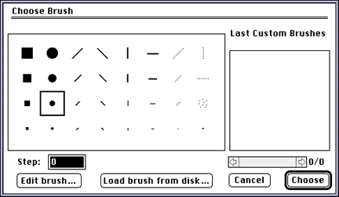

A dialog appears.

Figure 1: Dialog for setting the number of frames.
The Anim(ation) control panel appears at the bottom of the screen. This panel displays information about the currently loaded animation and lets you control it using buttons and scroll bars. Figure above shows that you're on frame 1 of a 10-frame animation (1/10).

Figure 2: Anim control panel.
Note: If you have problems creating an animation, start with a smaller document or a lower number of frames.
Painting one frame at a time
The simplest way to create an animation is to paint one frame at a time.
- Double-click the Brush tool (see Figure 3).

Figure 3: Tool palette with Brush tool selected.
- Select the largest round brush from the Choose Brush dialog that
appears (see Figure 4).

Figure 4: Choose Brush dialog.
- Click Choose (or press Return) to set your
selection.
- Paint a dot in the upper-left area of the open document.
You just placed a dot on frame 1. The trick of animation is to paint a slightly different picture on successive frames. Now you need to move to the next frame.
- Click the Next Frame button on the control panel.
- The counter on the panel changes from 1/10 to 2/10 and a fresh, blank
screen (frame 2) replaces the one with the dot on it (frame 1).
- Paint a dot to the right of where the first dot was.
Using keyboard shortcuts to move between frames
You now have a dot on frame 1 and a dot on frame 2.To complete a 10-frame animation of a dot that moves across the screen, you need eight more frames. To speed things up, use keyboard commands as follows:
- Position the brush to the right of the dot you just painted on frame
2.
- Press Command - 3 to move to the next frame and click the mouse to
paint a new dot.
- Repeat this sequence, pressing Command - 3 until the first dot appears
again at the left side of the screen. The frame counter in the control
panel reads 1/10 to show you are back at the first frame.
Playing an animation
You can play an animation in various ways:
- Click the Play Once button in the control panel to see the dot moving
quickly from left to right across the screen.
- Click the Play Continuously button to loop through the animation.
- Click Play Ping Pong to play the animation, then play it backwards.
Adjusting playback speed
If your animation plays too quickly, it may be because the speed adjustment scroll bar is set, by default, at the relatively fast playback speed of 30 frames per second.To slow down the playback speed, follow these steps:
- Use the mouse to slowly drag the speed adjustment scroll bar all the
way to the left.
- When the bar is completely white, the number 1 appears at its left.
You have set the playback speed to one (1) frame per second (fps). To increase the playback speed, drag the bar to the right with the mouse cursor.
- Adjust the speed to 4 frames per second.
- Click the Play Continuously button to view the animation at that
speed.
- To stop the animation, press any key or click the mouse.
Saving an animation
You can save an animation in the following file formats:
- 3DO cel/animation
- 3DO image/animation
- VDAN
How to save an animation
To save an animation in 3DO format, follow these steps:
- From the 3DO Options menu, choose Access 3DO Palette, then Show/Hide
3DO Palette (or type 3).
- Choose the cel type and resolution you want to use.
Choosing an 8-bit coded cel or a cel of smaller resolution is highly recommended to save space.
- Choose Remap Document.
3DO Animator creates a new document in which all the frames have been mapped to a new color palette.
- Choose Save As, then select 3DO cel/animation or 3DO image/animation
from the File Type pop-up menu.
- Click the Save button.